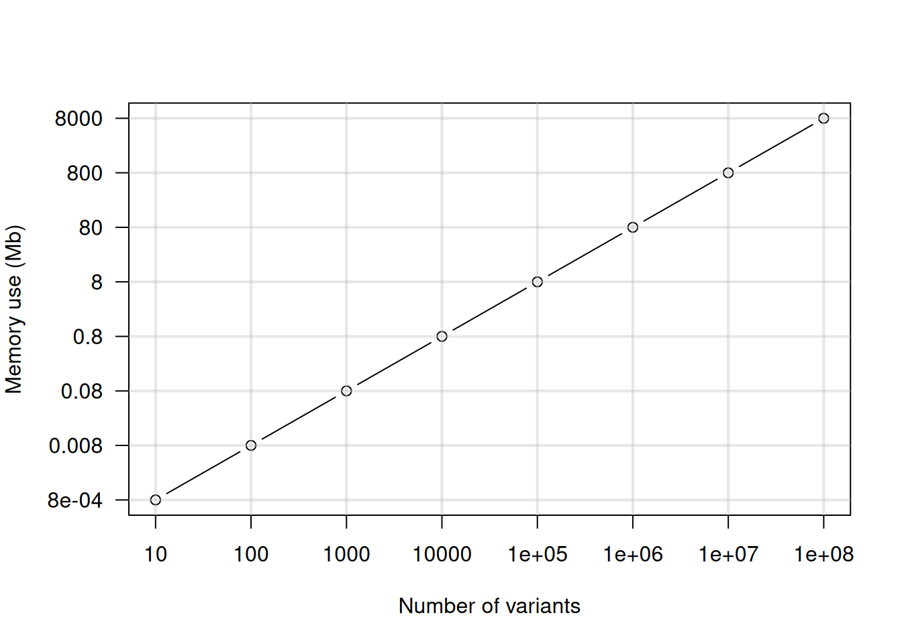

The R package vcfR attempts to read all data into memory (RAM) in order to perform manipulations or analyses. This is similar to other R packages. The catch with vcfR is that VCF files frequently contain large quantities of data. This may create a situation where you have more data than you can read into memory. Here I explore the memory footprint of a vcfR object to help you decide whether you have enough memory to read in your entire file, or whether you need to develop strategies for working on subsets of this data.
The vcfR object is an S4 class object consisting of three slots. The
meta slot is a character vector. It is recommended, but not
required, that the meta data include information for each chromosome in
the reference. In mature projects, with a small number of chromosomes,
the size of this data may be fairly small. In less mature projects,
where the reference may consist of thousands of contigs, this region may
become noticable in size. However, it is likely to be small relative to
the rest of the VCF data. The fix slot is a character
matrix that always consists of eight columns but has as many rows as
there are variants in the VCF file, plus one more row for the header.
The gt slot is a character matrix that contains a column
for each sample, plus one column to designate the format for each
variant, and it has as one row for each variant. As the number of
variants in your data grow the sizes of the fix and
gt slots grow to accomodate these variants. As the number
of samples in your dataset grow the number of columns in your
gt slot grows. Here we’ll explore how many variants may
require how much memory.
In order to estimate the memory footprint of vcfR objects containing
different numbers of variants we’ll use the R package
memuse. For simplicity, we’ll ignore the meta
slot and instead of using both a fix and a gt
slot we’ll use a single matrix of 10 columns. This approximates VCF data
containing one sample. As your sample size increases, so will your
memory footprint. Depending on your comfort level with R, you may be
able to modify the below code to match your data set.
library('memuse')
nvar <- 10^{2:8}
nMb <- howbig(nrow=10, ncol=10, unit="MB")@size
for(i in nvar){
nMb <- c(nMb, howbig(nrow=i, ncol=10, unit="MB")@size)
}
nvar <- c(10, nvar)Once we’ve simulated our data, we can visualize it. Here we’ll use a simple line graph.
par(mar=c(5,5,4,2))
plot(log10(nvar), log10(nMb), xaxt="n", yaxt="n", type='b', xlab="Number of variants", ylab = "")
axis(side = 1, at = log10(nvar), labels=nvar)
axis(side = 2, at = log10(nMb), labels=nMb, las=2)
title(ylab="Memory use (Mb)", line=4)
abline(h=log10(nMb), lwd=2, col="#C0C0C066")
abline(v=log10(nvar), lwd=2, col="#C0C0C066")
par(mar=c(5,4,4,2))This should give us an idea of how much data we can read into a vcfR object. When we have 100,000 variants we’ll need about 640 Mb of memory. If we have 1 million variants we’ll need about 6.4 Gb of memory. This is asking a lot of your typical work station. In the past I’ve found that creating objects in R that are over about 1 GB starts to affect the performance of the system. This may change in the future as R is constantly improving.
If you don’t know how many variants are in your VCF file you may be a t aloss for guessing how much memory you need. If you’re working on a flavor of Unix (OSX, Linux, etc.) you can use the shell to get an idea.
grep -v "^#" myVcfFile.vcf | head -n 1000000 | wc -lOr for gzipped files.
zgrep -v "^#" myVcfFile.vcf.gz | head -n 1000000 | wc -lThe zgrep -v "^#" myVcfFile.vcf.gz command sends the
contents of your VCF file to standard output, while omitting the meta
and header information which have lines begining with a pound or hash
sign. By piping this to head you limit the number of lines you count. If
you have a really large number of variants you may not want to count
them all. By piping this to wc -l it should count the lines
for you where each variant is one line. This should help you get an idea
of how many variants are in your file.
Our lab works on plant pathogens that have genomes in the range of
tens to hundreds of millions of base pairs in size. We typically work on
complete GBS datasets consisting of over 100 samples. These datasets
appear to read into memory and work quite well. For genomic projects we
typically have more variants than we can comfortably read into memory.
For these projects we typically work on a per supercontig manner as a
way of decomposing a genomic project into more manageable subsets. The
function read.vcfR() includes parameters nrows
and skip to allow you to read portions of VCF files into
memory. Note that this will require serial access so that selecting
regions of a file that are near the end of the file may require some
time to access. I find that breaking a VCF file into several files, one
for each supercontig, helps me sort through a genome more efficiently.
Hopefully this information will help you as well.
Copyright © 2017, 2018 Brian J. Knaus. All rights reserved.
USDA Agricultural Research Service, Horticultural Crops Research Lab.